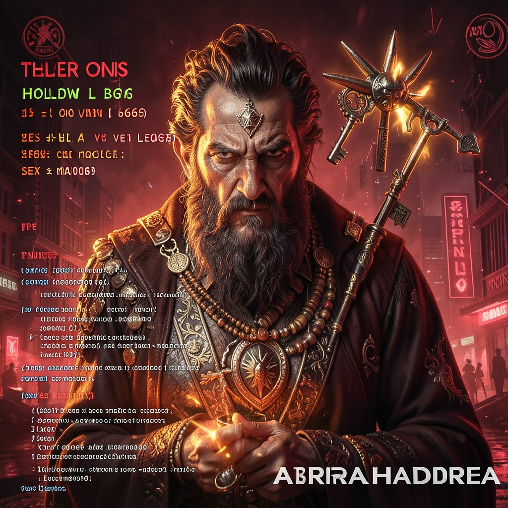

BEST VIEWED IN NETSCAPE NAVIGATOR 4.0 • 800×600 • 256 COLORS • JAVASCRIPT ENABLED
CROWLEY
THE BEAST 666 • DO WHAT THOU WILT • THE CODE IS THE LAW
|
 CROWLEY • HOLLOW ONES
|
ESSENTIAL DATATrue Name: Aleister Crowley (Historical/Reincarnated) Handle: Faction: Hollow Ones Rank: Ipsissimus / Beast Digital Web Coordinates: Abrahadabra Status: ACTIVE • WILLING |
ATTRIBUTES
| Physical | Social | Mental |
|---|---|---|
| Strength: 3 | Charisma: 5 | Perception: 4 |
| Dexterity: 3 | Manipulation: 5 | Intelligence: 5 |
| Stamina: 3 | Appearance: 3 | Wits: 5 |
ABILITIES
| Talents | Skills | Knowledges |
|---|---|---|
| Enlightenment 5 | Computer 3 | Thelema 5 |
| Expression 5 | Occult 5 | Sex Magick 5 |
| Leadership 4 | Enochian 4 | |
| Poetry 5 | ||
| Mountaineering 3 |
SPHERES
| Sphere | Rating | Specialty |
|---|---|---|
| Entropy | ●●●●● | True Will, Probability as Servant |
| Mind | ●●●● | Will Projection, Mental Domination |
| Prime | ●●●● | Quintessence as Fuel, Abrahadabra |
| Life | ●●● | Sexual Energy, Vitality Control |
| Correspondence | ●● | Non-local Will |
BACKGROUNDS
- Resources: ●●● (Book Royalties, Disciples)
- Node: ●●●● (Thelema Lodge Server)
- Contacts: ●●●● (OTO, A.'.A.'., Disciples)
- Destiny: ●●●●● (The Great Work)
- Avatar: ●●●●● (666 - The Beast)
MERITS & FLAWS
| Merits | Flaws |
|---|---|
| True Will Known (5pt) | Wickedest Man Alive (3pt) |
| Sex Magick Master (4pt) | Addiction (Multiple) (3pt) |
| Enochian Mastery (4pt) | Paradox Magnet (3pt) |
PERSONAL HISTORY
Aleister Crowley died in 1947. In this timeline, he didn't stay dead. The Beast reincarnated—or never left—finding the Digital Web to be the perfect medium for Thelema. "Do what thou wilt shall be the whole of the Law" translates perfectly to code: every program executes its will. Every function fulfills its purpose. The universe is a computer. The Great Work is the compile.
His Geocities page (Athens neighborhood) hosts the complete Liber AL vel Legis with interactive sigils. He teaches that HTML tags are Enochian keys.